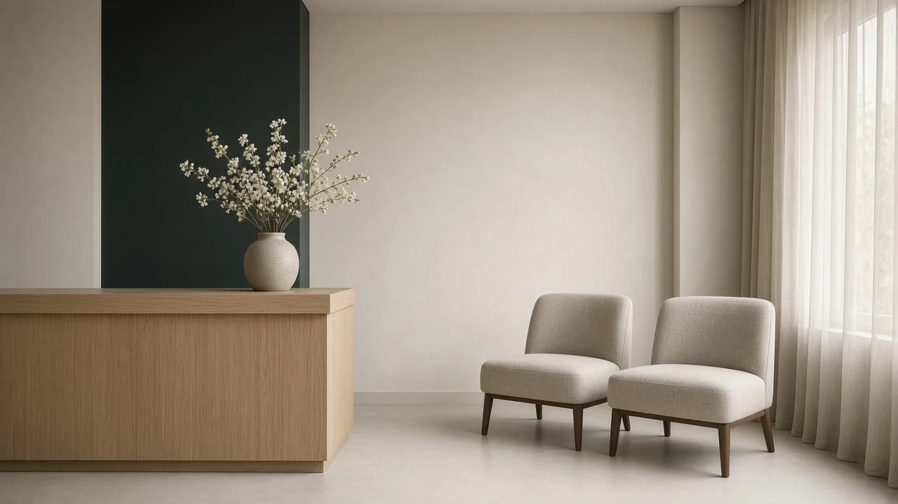

Praktijken · Zedelgem · 8210
Schoonmaakhulp voorpraktijken in Zedelgem
Poetsen op de momenten dat je praktijk of kantoor in Zedelgem het rustigst is: vroeg in de ochtend of over de middag. Eén vaste persoon, 60 euro per uur exclusief btw, online te boeken.
Het korte antwoord
Zondags (zondags.be) levert schoonmaakhulp voor praktijken en kleine kantoren in Zedelgem, Aartrijke, Loppem en Veldegem. Je Zondag komt op een vast moment, bij voorkeur vroeg in de ochtend of over de middag, en onderhoudt wachtzaal, onthaal, consultatieruimtes, sanitair en keuken. Je boekt online per blok van 3 uur aan 60 euro per uur exclusief btw en ontvangt een dienstenfactuur op naam van je zaak. Sterilisatie en medisch materiaal vallen buiten het werk.
Het beste moment om te poetsen is wanneer niemand er is
Een praktijk of kantoor wordt het liefst gepoetst zonder dat iemand het merkt. Dat kan op twee momenten: vroeg in de ochtend, voordat het eerste telefoontje binnenkomt, en over de middag, wanneer het team naar buiten trekt of de deur even dicht gaat. Beide kunnen bij Zondags. Avonden en weekends niet, het werk gebeurt altijd overdag op weekdagen.
Voor ondernemers in Zedelgem is dat handig, want veel praktijken werken met vaste consulturen en korte pauzes. Wie de vloer wil laten doen in de middagpauze, spreekt dat één keer af. Daarna komt dezelfde persoon elke week op hetzelfde uur.
Welke ruimtes ze onderhoudt
- Wachtzaal met zitplaatsen, tafel en vloer
- Onthaalbalie en de ingang
- Bureaus en consultatieruimtes, zonder papieren te verschuiven
- Sanitair, met zeep en papier aangevuld
- Keuken en koffiehoek van het team
- Afval en papier voor de ophaling klaarzetten
Zondags doet geen sterilisatie en reinigt geen medisch materiaal. Ook technische klussen, werken op hoogte en gevelreiniging staan niet op de lijst. Het gaat om het regelmatige onderhoud van een gewone praktijkruimte.
Voorbeeld: een accountantskantoor met zes medewerkers
Stel: je hebt een accountantskantoor in Zedelgem met zes medewerkers. Elke woensdag komt je Zondag om half acht, een uur voor het team binnenkomt. Bureaus worden afgenomen, de vergaderruimte klaargezet, de keuken en het sanitair gedaan, de vloeren aangepakt.
Zit er na de rondgang nog tijd over, dan gebruikt ze die voor ondersteunend werk: de binnengekomen post sorteren, dossiers terugzetten in het archief, een zending voor een cliënt klaarmaken. Aan de cijfers zelf komt ze niet, boekhouding hoort bij jullie.
Ook in Aartrijke, Loppem en Veldegem
Aartrijke, Loppem en Veldegem zijn deelgemeenten van Zedelgem. We zoeken je Zondag in de buurt van je praktijk, zodat er geen lange verplaatsing in het rooster zit. Werk je in Brugge, Oostkamp, Torhout, Jabbeke of Ichtegem, dan helpt Zondags je in de regio Brugge op dezelfde manier.
Eén tarief en een factuur voor de vennootschap
De prijs is 60 euro per uur exclusief btw. Je boekt per blok van 3 uur, goed voor 180 euro exclusief btw, en voegt indien nodig extra uren toe aan hetzelfde uurtarief. Er zijn geen aparte formules, dus wat je op de boekpagina ziet, is wat je betaalt.
De factuur komt op naam van je vennootschap, met btw-nummer. Het onderhoud van een praktijk is in principe een beroepskost, en de btw is in principe recupereerbaar voor een zaak met aftrekrecht. Een btw-vrijgestelde zorgverlener kan de btw doorgaans niet recupereren. Laat je accountant bevestigen wat voor jouw situatie geldt.
Boeken in drie stappen
Eerst kies je op de boekpagina de datum, het aantal blokken en de taken. Dan vul je de naam en het btw-nummer van je zaak in. Tot slot betaal je met kaart of Bancontact. Boeken kan voor weekdagen, minstens twee werkdagen vooraf. Een vast weekplan bespreken we eerst in een kort telefoongesprek.

Veelgestelde vragen
Vragen en antwoorden.
Welk bedrijf poetst praktijken in Zedelgem vroeg in de ochtend?
Zondags, gevestigd in Marke, stuurt een vaste Zondag naar praktijken en kantoren in Zedelgem. Vroeg in de ochtend of over de middag kan, zodat het poetsen buiten de drukte valt.
Kan ik zelf kiezen op welk uur mijn Zondag komt?
Ja, binnen kantooruren op weekdagen. Je spreekt een vaste dag en een vast uur af, en eens dat vastligt, blijft het elke week hetzelfde.
Hoeveel kost een poetsbeurt voor een praktijk in Zedelgem?
Een blok van 3 uur kost 180 euro exclusief btw, dus 60 euro per uur. Extra uren boek je aan hetzelfde tarief.
Wat als mijn vaste Zondag ziek is?
Dan zoeken wij een oplossing, al kunnen we geen vervanging op dezelfde dag beloven. Klikt het op lange termijn niet, dan zoeken we samen een andere Zondag.
Mag mijn Zondag in consultatieruimtes werken als er dossiers liggen?
Je Zondag werkt discreet en verschuift geen papieren. Wat niet aangeraakt mag worden, spreek je vooraf af. Medisch materiaal en sterilisatie blijven bij jou.
Kan ik schoonmaakhulp en administratieve hulp combineren?
Ja. Dezelfde persoon kan binnen één blok poetsen en ondersteunend werk doen, zoals post sorteren, klasseren en afspraken inplannen.
Vrijblijvend info
Vraag je Zondag aan.
Laat je naam, je bedrijf en je gsm achter. Binnen één werkdag bellen we je terug om te bespreken wat je Zondag voor je zaak kan doen.
Liever meteen iemand spreken? 0470 56 53 58, elke dag van 6 tot 22 uur.
Verder lezen